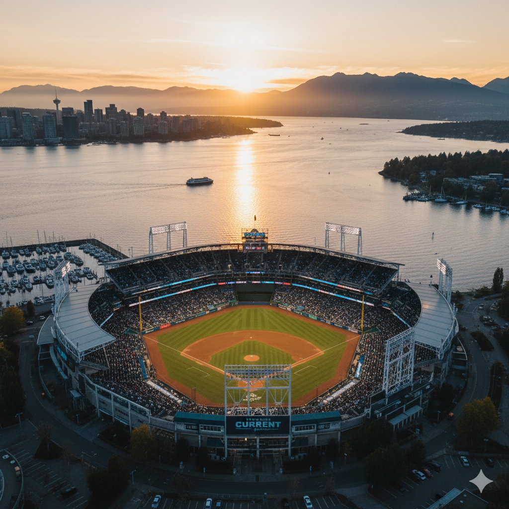
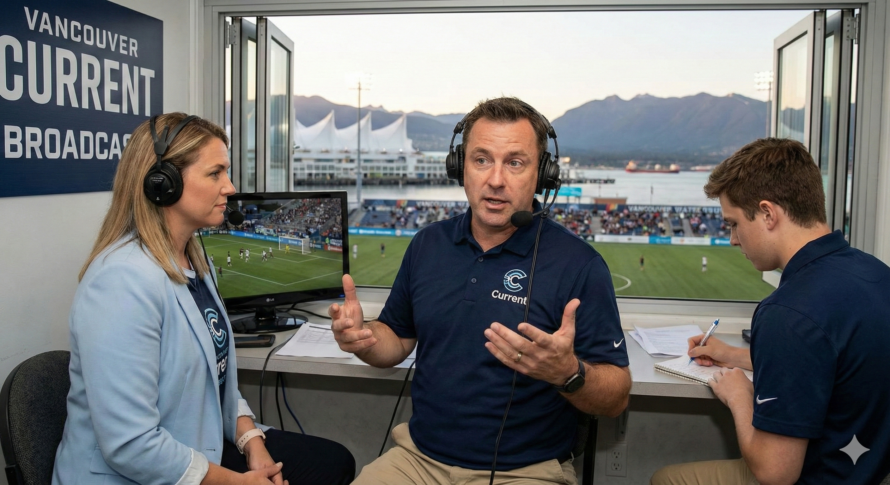
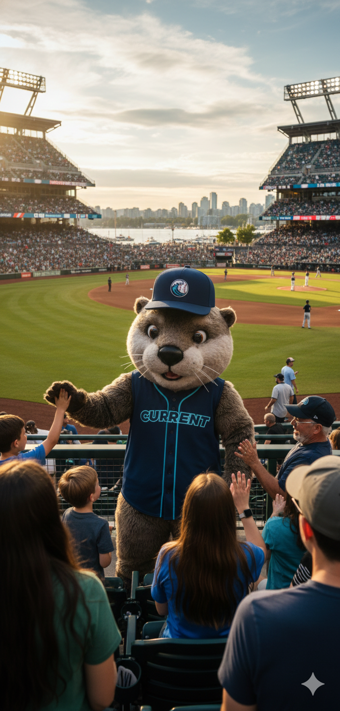
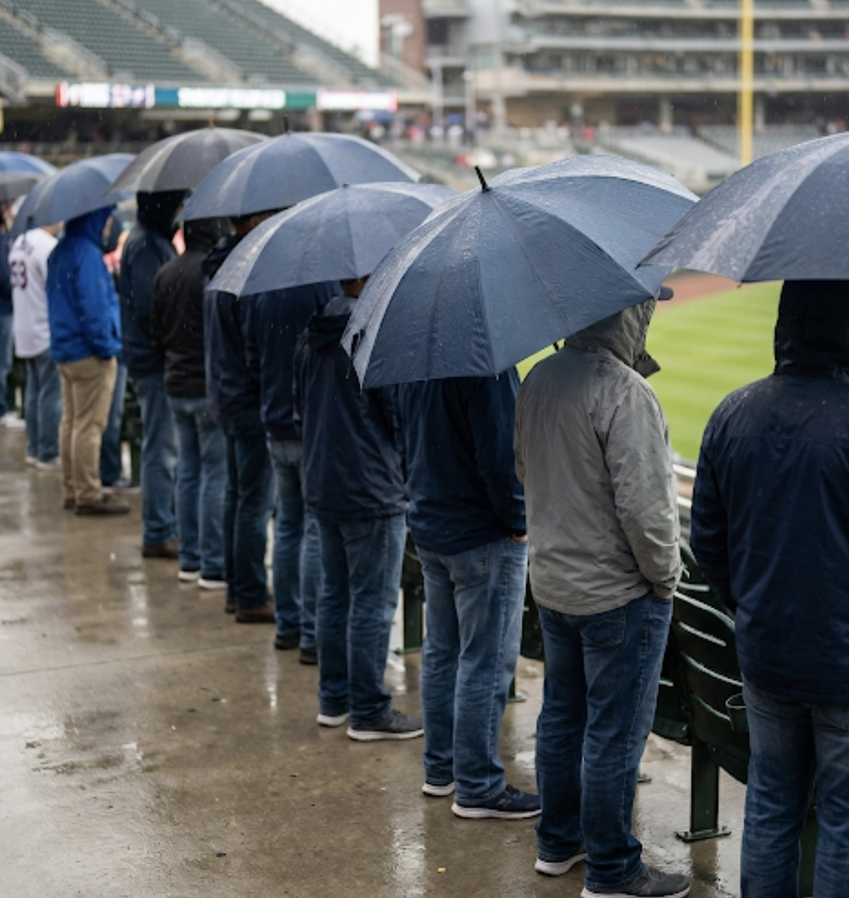

The Current play like the tide: steady pressure, clean angles, and a constant sense that something is being pulled under. Their offense is patient and surgical—short bursts, quick reads, no wasted motion. Vancouver doesn’t overwhelm you with noise. It overwhelms you with inevitability.

The Seawall Grounds. Built on the edge of water with the skyline behind it, the park looks too clean to be real—until the wind shifts. Late games feel like a broadcast from a ship’s deck: bright light, salt air, and an uncanny calm that makes every crack of the bat sound louder than it should.

Voice of the Current. Crisp calls, minimal drama. They speak like people who’ve done this in storms. Their booth windows stay open even when they shouldn’t—because the whole point is hearing the water behind the crowd.

A friendly coastal creature with unnerving stamina—always waving, always moving, always exactly where the cameras aren’t. Skipper is part comfort, part distraction: a reminder that the sea is right there, and it’s watching too.

Vancouver fans don’t “pack in”—they line up. Along the rail, they lean forward like observers at an aquarium: quiet, intent, and ready for the exact moment the game turns. When it happens, the reaction is sharp and brief—then back to stillness.
| SS | Jules “Undertow” Mercer |
| P | Kai “Glasswater” Nomura |
| C | Rory Slate |